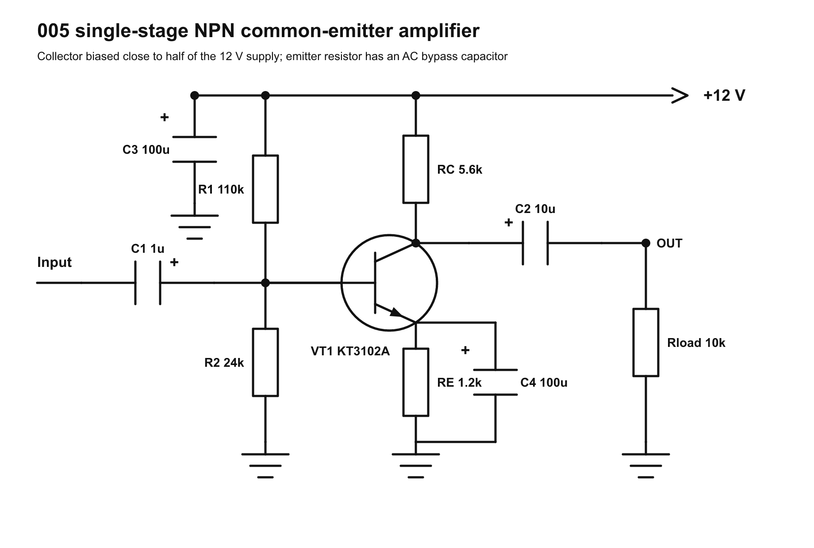
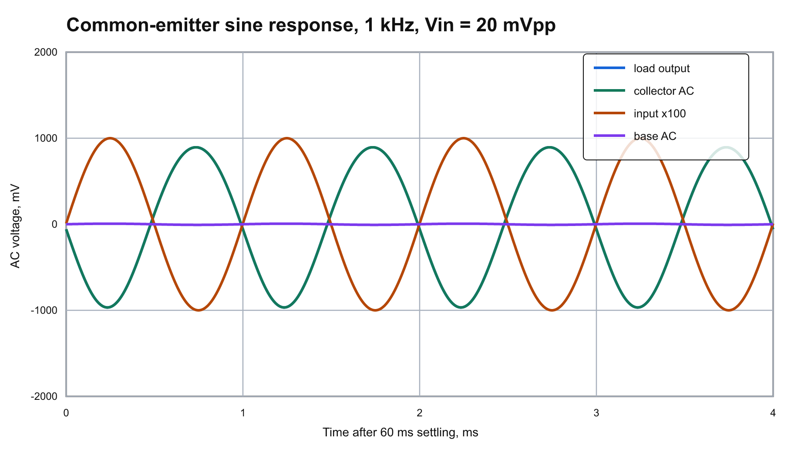
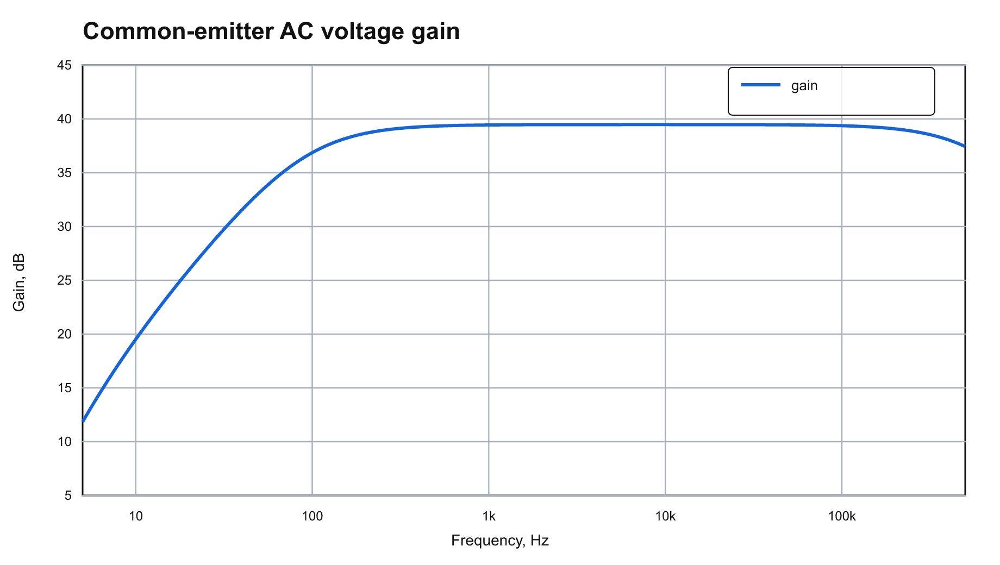

005 single-stage NPN common-emitter amplifier
This result is a simple one-transistor common-emitter voltage amplifier. The circuit uses a KT3102A-like NPN model, a base divider, an emitter resistor for DC stability, an emitter bypass capacitor for higher AC gain, and input/output coupling capacitors.
The main design target was to bias the collector near half of the 12 V supply so the collector can swing in both directions before clipping. The chosen E24 values are:
R1: 110k from +12 V to baseR2: 24k from base to groundRC: 5.6k collector resistorRE: 1.2k emitter resistorRload: 10kC1: 1u input couplingC2: 10u output couplingC3: 100u supply bypassC4: 100u emitter bypass, positive terminal toward the emitter
Operating point
ngspice DC operating point:
- Base voltage:
1.938 V - Emitter voltage:
1.298 V - Collector voltage:
6.002 V - Collector current:
1.072 mA - Total supply current in this small-signal model:
1.163 mA
Simulation
At 1 kHz with 20 mVpp input:
- Transient voltage gain:
93.17 V/V - AC gain at 1 kHz:
39.44 dB - Output RMS voltage:
658.71 mV



Files
variants/common_emitter.py: reusable circuit variant with schematic drawing, SPICE netlist, plots, and README generation.schematic/common_emitter_amplifier.svg/png: generated schematic.netlists/common_emitter_amp.cir: main ngspice netlist.data/ngspice.log: operating point and ngspice run log.data/ac_response.csv: AC gain/phase data.data/transient_1khz.csv: 1 kHz transient data.data/summary.csv: compact numeric summary.
{kind=link}
{kind=link}
{kind=link}